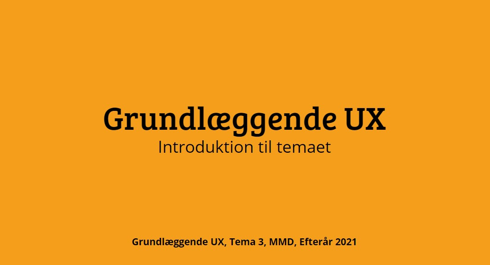

I Tema 3 (Grundlæggende UX) lød opgaven på design af en fiktiv t-shirt webshop samt en endegyldig XD-prototype.
I dette forløb, blev jeg introduceret til, hvordan man ud fra en case, kan starte, undersøge og lave prototype til et sådan case. Før prototypen kunne bygges, var der dog først brug for research. Dette er vigtigt, da brugerinformation til konceptet, er altafgørende for succes af den fiktive webshop. De forskellige undersøgelsesmetoder var bla desk research, interview research og survey research. Denne research, byggede fundamentet for idéen, der skulle blive det "endelige produkt", samt løsningen på den udleverede opgave.
Den endelige idé, blev en virksomhed som havde til formål, at bringe en tøjserie til markedet, som udelukkende sørger for, at brugeren havde det bedst muligt tilpas i sit tøj. Ud fra min Desk Research erfarede jeg, at der er en del aspekter i salg og producering af t-shirts. Dette begrænses dog en smule, når målgruppen er sat. Ud fra de forskellige webshops m.m. som er blevet besøgt, kan det konkluderes at t-shirts, ikke sælges særligt dyrt. Det er uanset om t-shirten er med print, eller blot basic farve.
Webshoppen skulle derfor bruge en USP. I min fiktive webshop, blev det, at virksomheden gik ind i kampen mod børnearbejde, og kun ville bruge produkter fra verificerede fabrikker, der samtidigt havde fokus på grøn produktion af T-shirts. En overkommelig pris, samt bæredygtige t-shirts, var derfor det unikke salgspoint, uden at gå på kompromis med kvaliteten.